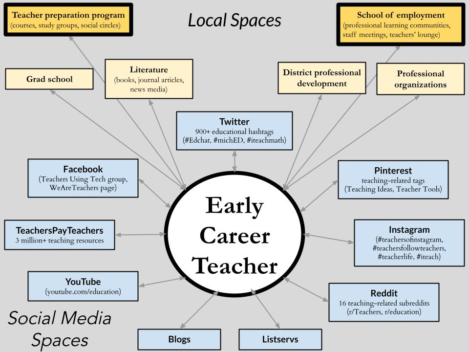

4 Framework
This study is framed with a PLN lens, focusing on new teachers’ support systems in terms of tools, people, and spaces that help improve teaching and learning (Krutka et al., 2017; Trust et al., 2016; Trust & Prestridge, 2021). The PLN concept has roots in situated learning theories, which assert that learning occurs within specific contexts (Lave & Wenger, 1991; Putnam & Borko, 2000). Lave and Wenger (1991) described learning as an apprenticeship, a process wherein a newcomer becomes a member of a community of practice. This view of learning-as-situated foregrounds the individual learner; for PLNs, this means focusing on a single teacher who connects to tools, people, and spaces to support and improve their ongoing professional learning. The tools shared in PLNs are useful for teachers’ professional learning and may include knowledge, skills, teaching resources, curricular materials, and encouragement. These tools are shared by people, both individuals and groups, with whom a new teacher can connect through various spaces (e.g., school of employment, district workshops, social media platforms). Teachers’ willingness to voluntarily construct PLNs in addition to required professional development suggests that there are underlying reasons that justify spending extra time and effort beyond the regular demands of the teaching profession. In sum, a PLN can be understood in terms of why (i.e., underlying reasons) a teacher constructs a support system, what they are looking for (i.e., tools for professional learning), from whom (i.e., people), and where (i.e., spaces).
A PLN lens is well-suited to frame this study because it foregrounds teachers’ professional learning while expanding the scope of tools and people to potentially include those accessed through emergent spaces like social media. PLNs include elements of traditional professional development in addition to informal learning possibilities (Krutka et al., 2017; Prestridge, 2019; Trust et al., 2016), spanning local and global spaces (Trust et al., 2016). The mix of face-to-face, online, formal, and informal elements highlighted by a PLN framework has the potential to address the gap between research on teacher induction and research on teachers’ use of social media.
Two other frameworks intersect with the PLN concept and offer additional insight: learning ecology and agency. First, the many spaces comprising a new teacher’s PLN can be understood as a learning ecology: “the set of contexts found in physical or virtual spaces that provide opportunities for learning” (Barron, 2006, p. 195). In other words, a learning ecology emphasizes the spatial component of a PLN, highlighting that PLNs are composed of interconnected and mutually influential spaces, with the individual teacher at the center (Figure 1). Disparate pieces of a PLN fit together to make a whole (Barron, 2006; Stevenson et al., 2019; Veletsianos et al., 2019) and may change over time (Carpenter et al., 2021; Veletsianos et al., 2019). For instance, a new teacher may start asking teaching-related questions in the r/Teachers subreddit and learn about policy issues in the r/education subreddit (Staudt Willet & Carpenter, 2021) to complement a recent district professional development workshop discussing new expectations for teaching to standards. In cases like this, participating in informal contexts can support and influence learning in formal contexts (Peters & Romero, 2019).
Figure 1. Spaces for New Teachers’ Professional Learning

PLNs are “uniquely cultivated” (Trust & Prestridge, 2021, p. 1), meaning each teacher makes their own choices about how to construct their support system from a subset of all tools, people, and spaces available to them (i.e., why they access some contexts but not others). These choices in PLN construction are a way that teachers exercise agency. Agency may be understood as the ability to take intentional and purposeful actions, which are “influenced by experiences, beliefs, values, and goals in conjunction with the context” (Wray & Richmond, 2018, p. 3).
An agentic perspective highlights how a new teacher is responsible for ensuring that the PLN they construct meets their induction needs. Agency focuses attention on how teachers are able “to play a part in their self-development, adaptation, and self-renewal with changing times” (Bandura, 2001, p. 2). For instance, if a new teacher had difficulty contextualizing the content of a district professional development workshop, it would be up to them to talk to colleagues in the teachers’ lounge, ask a mentor teacher, or see what answers they could find through social media.
In sum, this study considers new teachers’ construction of support systems with a PLN frame, taking into account ecological and agentic perspectives. Social media have greatly increased access to potential tools, people, and spaces that might help new teachers navigate induction challenges. An ecological perspective spotlights the relationship between various PLN components, and an agentic perspective draws attention to new teachers’ intentionality in choosing some components to add to their PLN, but not others.